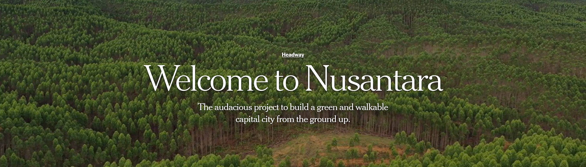
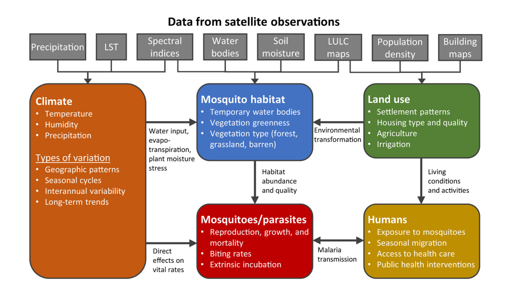

5 Policy
Project Case : A New Relocated Capital City of Indonesia ; From Jakarta to Nusantara

Source : www.nytimes.com
5.1 Summary
Recently Indonesia planned to move its capital city from Jakarta (in Java islands) into Penajam Paser Utara City (Borneo Islands), as the current capital city, Jakarta, faced an issue of sinking, land subsidence, overcrowding, low air and water quality (Bappenas 2021). The term Nusantara is used to name this new capital city, symbolizing the varied geographic settings and cultural diversities of Indonesia.
As for the time this published, Nusantara Development is on the phase 2 (2025-2029) that involved strengthening core area (housing, office, commercial zone). Thus, in the time being, Jakarta will still remain the capital of Indonesia until the Presidential Decree on the transfer of the capital to Nusantara is issued. The issuance of this decree will depend on the readiness of the new capital city, including the preparation of all supporting systems such as infrastructure, human resources, and governance systems.
Figure 1: The Relocation Settings and Vision. source: (Capital Authority 2024)
As the development is still in the initial stage, the detailed planning documents haven’t been launched yet. Thus, I use available published documents regarding the detail of Nusantara’s Development which all of them are publicly available, such as:
- Nusantara Sustainable Development Goals (SDGs) Voluntary Local Review Baseline [2024]
- Nusantara Biodiversity Management Master Plan [2024]
Policy
The new capital city, Nusantara, is designed as a forest city, with 75% of its designated area being green space. This design aims to create a harmonious blend of urban development and biodiversity hotspots (Borneo Island, where Nusantara is located, is famous for its tropical rainforests). However, the design of being a forest city, its proximity to the rainforest, and its drive on landscape change would present significant challenges. One of the major concerns is the increasing likelihood of mosquito-borne diseases (such as malaria) spreading in the new capital, which are prevalent in tropical regions Surendra et al. (2024).
Addressing this risk is essential, as Nusantara aims to become a sustainable city aligned with the Sustainable Development Goals (SDGs). However, there is currently no official framework from the government for mitigating malaria risk in Nusantara, as the primary focus remains on infrastructure development. Since malaria is both a global and local challenge, certain goals should be considered to support Nusantara’s sustainability, such as:
A. Global Goals : Sustainable Development Goals (SDGs) 3.3 : Fight Communicable Diseases
The SDGs propose achievable global in combating malaria with target that in include reducing incident, mortality rates, eliminate malaria in 35 countries by 2030 and prevent resurgence of the disease in a malaria-free country. Meanwhile, Indonesia’s estimated malaria incidence per 1000 population at risk is still on range between 1-50 incidents per 1000 population in 2023.

Figure 2 : SDGs Goal related to Malaria. source : globalsgoal.org
To achieve the Global Goals, WHO launched global technical strategy for malaria 2016-2030 with frameworks such as:
Pillar 1 : Ensure access to malaria prevention, diagnosis and treatment as part of universal health coverage.
Keywords I underlined in this pillar is : Countries should collect data across all settings, including those areas that are malaria-free but at risk of re-establishment of malaria .
Pillar 3. Transform malaria surveillance into a key intervention.
Keywords I underlined in this pillar is : surveillance in areas of high & low transmission and in areas targeted for elimination
B. Local Goals : Eliminate malaria case by 2030 and maintain malaria free status
Translating the global goals on malaria elimination, Indonesia’s Ministry of Health (Ministry of Health and Control 2023) had proposed recommendations, including the new capital city such as:
Malaria elimination policies and implementation need basic research, operational support, and efficient technology development.
Provide input to the IKN special authority regarding malaria risk to ensure the design of the IKN area drainage system is free from malaria mosquito larvae habitat
Mapping legal and illegal forest encroachers to develop an activity plan and budget
5.2 Application
Remote Sensing as Baseline for detecting malaria hotspot
In malaria elimination, remote sensing could be beneficial as a baseline data for mapping malaria hotspot by incorporating climatic factors and landuse factors to detect mosquito habitat as what (Wimberly et al. 2021) aggregated in framework on Figure 1. Dataset for the Nusantara analysis could use imagery product which is able to highlight water bodies and wetland (proxy for breeding sites), vegetation and land cover (proxy for mosquito habitat), surface temperature (proxy for mosquito activity), and topography (potential inundation area). We could use rainfall season for in our dataset, however If we have yearly rainfall data perhaps we could identify the pattern of rainfall session to get more informed when picking the time series.
Earth observation data commonly used in malaria research included Sentinel-2 and Landsat 8, although Sentinel-2 is preferred because its finer resolution and its frequent visit. However, (Wimberly et al. 2021) mentioned that those resolution is still too coarse to detect individual larva habitat and breeding thus suggest Very High Resolution imagery (such as Pleaides, WorldView) or SAR imagery (such as C-band SAR Sentinel-1 data) that able to penetrate cloud cover during the wet season.

Figure 2: Framework in which Remote Sensing used in Malaria studies. source : Wimberly et al. (2021).
5.3 Reflections
During this week, I got a lot of reflections on my mind because I finally found lecture that explicitly bridging the gap of ‘academics’ to real-world policy. One the most important key-takeaway from the lecture is that “some academics papers are too technical, without clearly addressed policy; some policy don’t include academic findings they could benefit for”.
My reflections would be:
- Remote Sensing is good, but combining with GIS is better
From the result in step 1, we could then investigate the result using the malaria incident data to validate our classification result, what percentage of areas classified as high risk have recorded incidents, and which areas have not? As I delved further into the framework in eliminating Malaria both Global and Local framework, they have mentioned to aggregate data about the incidents, high risk, low risk but not explicitly mentioned using map. With map, we could easily overlay this hotspot with malaria incidents, landuse, and potentially social-economic data as
- Remote Sensing and GIS is good, but interpreting the data with affected communities is better
Aside from remote sensing data, I would like to combine the analysis by incorporating local wisdom in responding to Malaria. This approach would enhance the understanding of how to mitigate this issues, as these communities have lived for a long time near the rainforest and are directly affected.
- Challenges of implementation, collaboration is a key
I resonate a lot with the lecture’s key takeaway as I genuinely think academics and urban governance still have a distance between them. In terms of human resources, that make the adoption of academics finding hard to implement in governments. Besides, government project is based on annual budget which is make it a fast-paced environment that need an immediate output which make them reluctant to go through experimental phase often found in academics processes. Thus collaboration is a key between